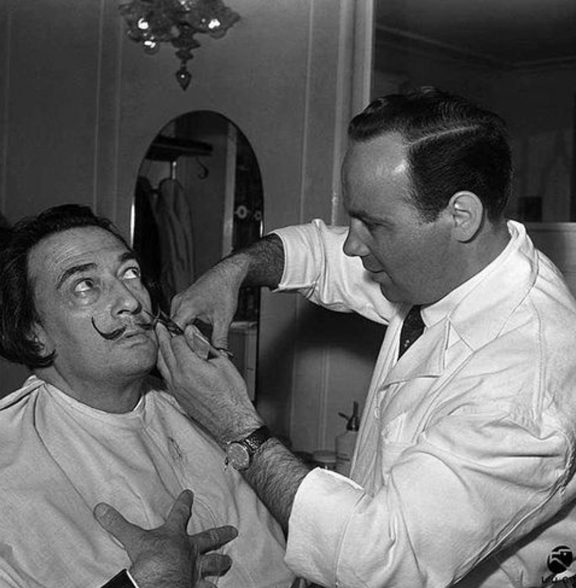

blog
-

WHY CHOOSE DalisTache?
Barber shops usually have a much cheaper price than salons which is a key reason for their frequent customers if given a quality haircut...
read this -

my inspiration
From a very young age, Dalí found much inspiration in the surrounding Catalan environs of his childhood and many of its landscapes would become recurring motifs in his later key paintings...
read this -
my trip to india
Mysticism, warmth, sensuality, beauty and natural surroundings. Lovely experiences, magic and spiritual peace. Energy, purity … a trip through the five senses. It’s the India’s universe…
read this